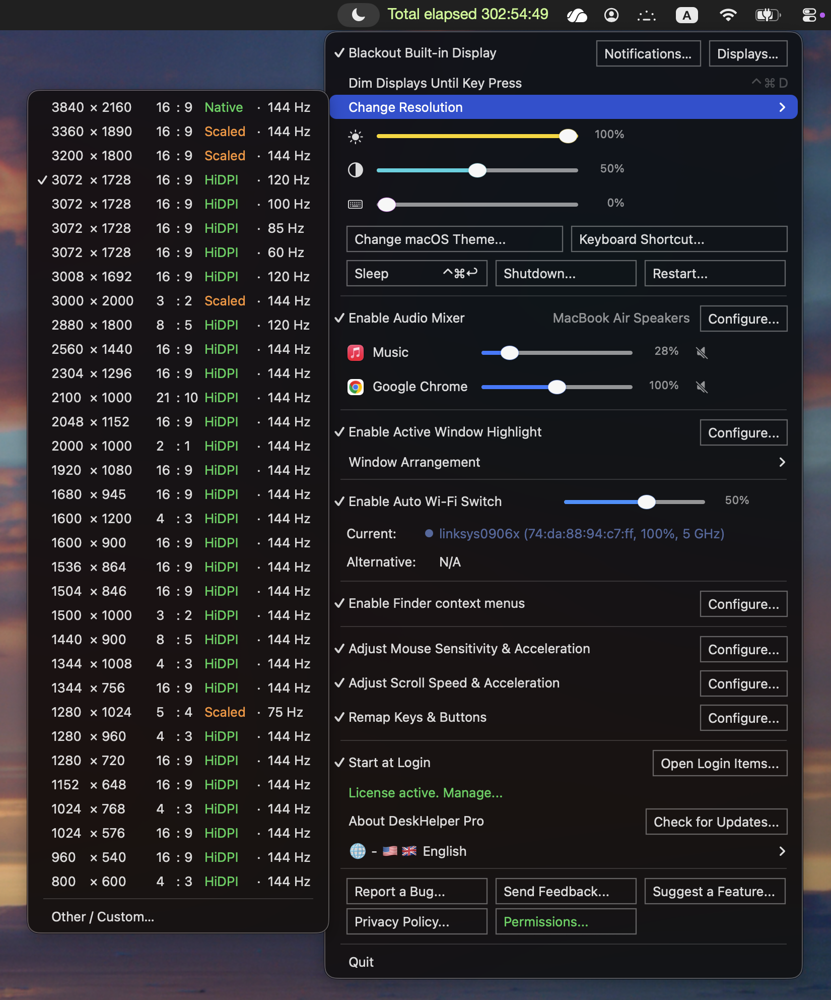
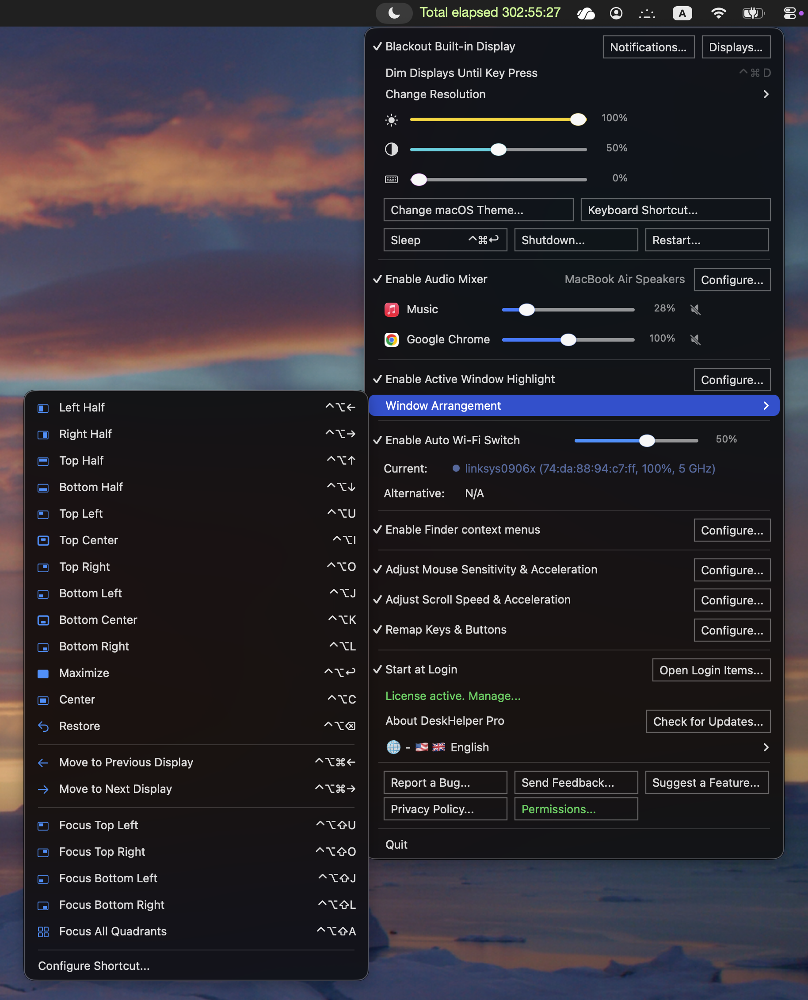
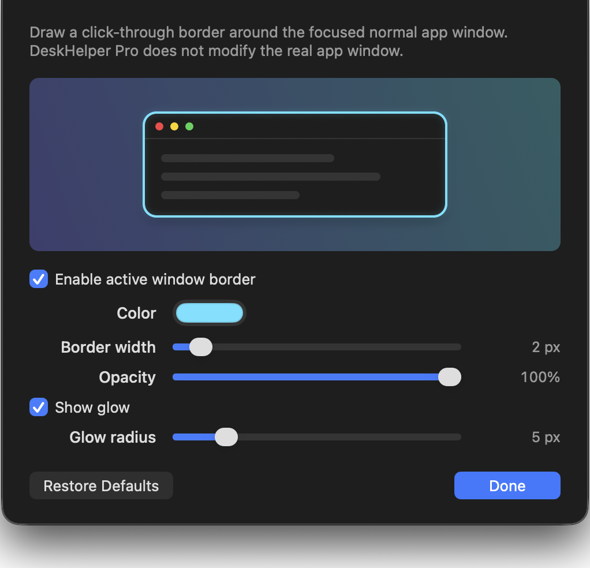

Näytön ja ikkunoiden hallinta
Hallitse visuaalista työtilaasi hyppimättä Järjestelmäasetusten, kolmannen osapuolen ikkunatyökalujen ja näyttövalikkojen välillä.
- Sammuta MacBookin sisäinen näyttö, kun kuva peilataan ulkoiseen näyttöön.
- Vaihda peilausta, himmennä näytöt näppäinpainallukseen asti, siirry lepotilaan, käynnistä uudelleen, sammuta sekä säädä kirkkautta tai kontrastia.
- Asenna ja vaihda tuettuja HiDPI-/mukautettuja näyttötiloja.
- Siirrä ikkunoita puolikkaisiin, kulmiin, keskitettyihin sijainteihin, koko näytön asetteluihin, muille näytöille tai muihin työtiloihin.
- Korosta aktiivinen ikkuna muokattavalla, klikkaukset läpäisevällä reunuksella.
Sisältää järjestettyjen ikkunoiden kohdistuksen sekä Rectangle/Rectangle Pro -ristiriitaohjeet.



